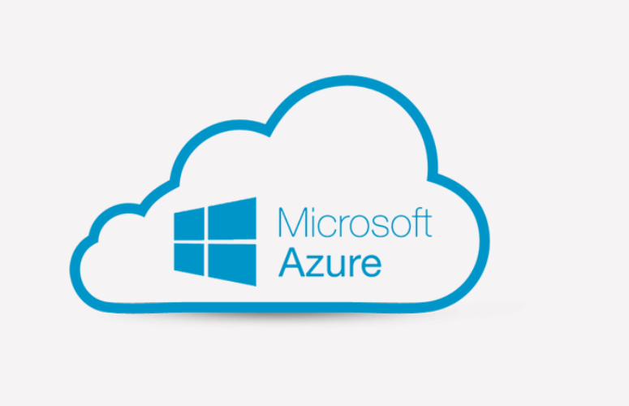

If you do not need hands-on experience, consider the AZ-900T01: Microsoft Azure Fundamentals (1 day) course. The content for both courses align to the AZ-900 exam objective domain.
DURATION:This course will provide foundational level knowledge on cloud concepts; core Azure services; security, privacy, compliance, and trust; and Azure pricing and support. Note: This course provides an Azure pass and time for students to participate in hands-on labs. If you do not need hands-on experience, consider the AZ-900T01: Microsoft Azure Fundamentals (1 day) course. The content for both courses align to the AZ-900 exam objective domain.
This course is suitable for IT personnel who are just beginning to work with Azure. This audience wants to learn about our offerings and get hands-on experience with the product. This course primarily uses the Azure portal to create services and does not require scripting skills. Students in this course will gain confidence to take other role-based courses and certifications, such as Azure Administrator. This course provides an Azure pass and optional lab environment. This course combines lecture, demonstrations, and hands-on labs. This course will also help prepare someone for the AZ-900 exam.
In this module, you will learn about cloud services, the types of cloud models, and the types of cloud services.
LessonsAfter completing this module, students will be able to:
In this module, you learn about Azure core cloud architectural components, Azure services and products, Azure solutions, and Azure management tools.
LessonsAfter completing this module, students will be able to:
In this module, you learn about Azure security, identity, governance, monitoring, reporting, and standards
LessonsAfter completing this module, students will be able to:
In this module, you will learn about Azure subscriptions, planning and managing costs, support options, SLAs, and service lifecycles.
LessonsAfter completing this module, students will be able to:
| Related Course | |
|---|---|
|  Microsoft Azure Fundamentals (AZ900) |
 Microsoft SQL Server Microsoft SQL Server
|
Ojo Contact148, Olojo Drive High Taste B/Stop, EIIT/FCMB Building, Ojo, Lagos State. |
Satelite Town ContactNo 1 Community Road Abulado Satelite Town, Lagos State. |
Lekki ContactNo 9, Otunba Adedoyin Ogungbe Crescent, Opposite ELIM Motors LekkiPhase 1, Lagos State. |